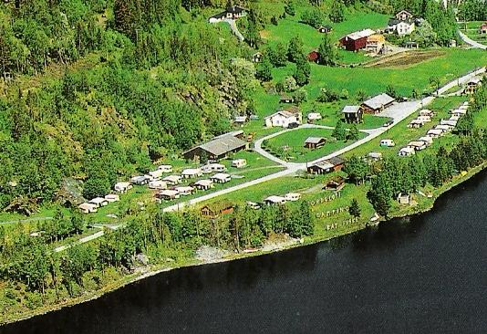
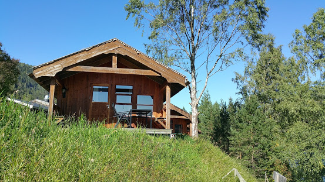
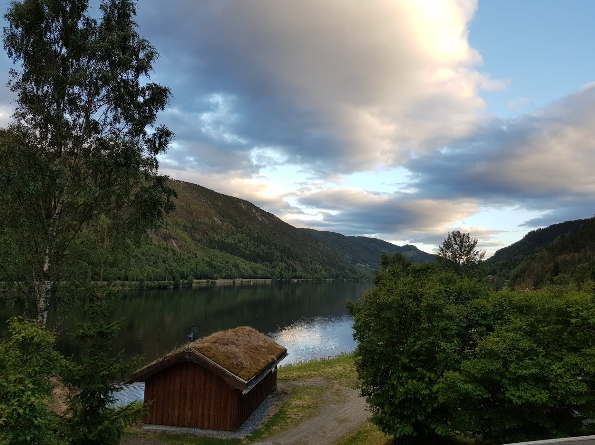
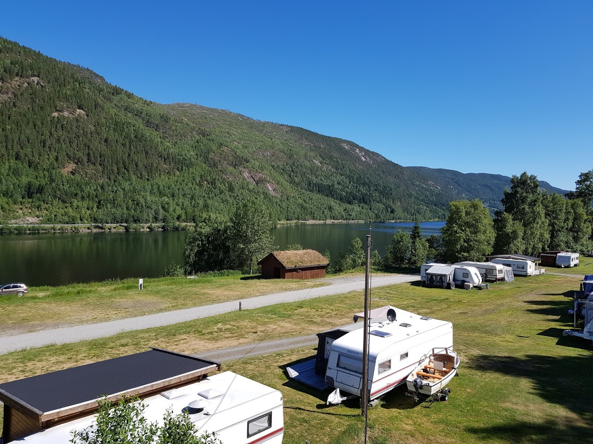

Huts and Camping
We offer both cabin and camping rental!
Welcome to Fjordgløtt Camping!

Fjordgløtt means 'fjord view' and is situated directly at the Norefjord, a large lake between Nore and Rødberg.
The campsite is located 3,73 miles south of Rødberg, part of the council of 'Nore og Uvdal' and only 1600 metres from the E40, the motorway from Kongsberg to Geilo. The campsite borders on the 'Hardangervidda Nature park', a beautiful area where you can go hiking or skiing (cross country). This is the largest mountain plateau in Europe.
The campsite has availability for 75 caravans, campers and tents and there is electricity on all pitches. For the children there is a large play area with a trampoline, a swing etc. The Fjordgløtt campsite is situated directly at a large lake: Norefjord. Besides swimming this is the perfect place to go fishing on e.g. trout. In winter you may even go ice fishing! On the campsite you can rent boats. For the children's safety we rent life jackets.
Due to a fire in the sanitary building on the campsite, we have temporary sanitary facilities during the summer of 2021.
However, we are open from May 1st, and welcome both old and new guests this summer as well!

The campsite is located 3,73 miles south of Rødberg, part of the council of 'Nore og Uvdal' and only 1600 metres from the E40, the motorway from Kongsberg to Geilo. The campsite borders on the 'Hardangervidda Nature park', a beautiful area where you can go hiking or skiing (cross country). This is the largest mountain plateau in Europe.
The campsite has availability for 75 caravans, campers and tents and there is electricity on all pitches. For the children there is a large play area with a trampoline, a swing etc. The Fjordgløtt campsite is situated directly at a large lake: Norefjord. Besides swimming this is the perfect place to go fishing on e.g. trout. In winter you may even go ice fishing! On the campsite you can rent boats. For the children's safety we rent life jackets.
Due to a fire in the sanitary building on the campsite, we have temporary sanitary facilities during the summer of 2021.
However, we are open from May 1st, and welcome both old and new guests this summer as well!
1 / 3

2 / 3

Great nature
Here at Fjordgløtt we are close to nature with both sea and forest right outside the door
Here at Fjordgløtt we are close to nature with both sea and forest right outside the door
3 / 3
Activities
Around the area you can find activities such as fishing, rafting and mountain biking.
Around the area you can find activities such as fishing, rafting and mountain biking.
3 / 4

Camping